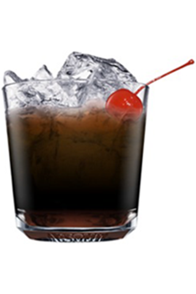

Black Russian to drink składający się z wódki i likieru kawowego, którym najczęściej jest tutaj Kahlua. Historia Black Russian, w przeciwieństwie do krewnego tego drinka – White Russian, jest w miarę jasna i ustalona. O ile ten “biały Rosjanin” kojarzy się z filmowym “Gościem” z Big Lebowski, o tyle historia i nazwa “czarnego Rosjanina” jest już bardziej drinkowa – pochodzi od nazwy bazowego alkoholu.

Składniki
- wódka - 100 ml
- Kalhua - 50 ml
- lód - kilka kostek
Sposób przygotowania drinka
Przygotowanie Black Russian nie powinno przysporzyć większych trudności ani przy zakupie składników, ani przy samym przyrządzaniu drinka. Wystarczy wypełnić tumbler na lodzie, który jednocześnie będzie służyć jako naczynie do podania drinka, do połowy kostkami lodu. Następnie należy wlać 1,5 miarki wódki i 0,75 miarki likieru kawowego. Potem wystarczy już tylko bardzo delikatnie zamieszać drinka. Black Russian widnieje na liście przepisów IBA.